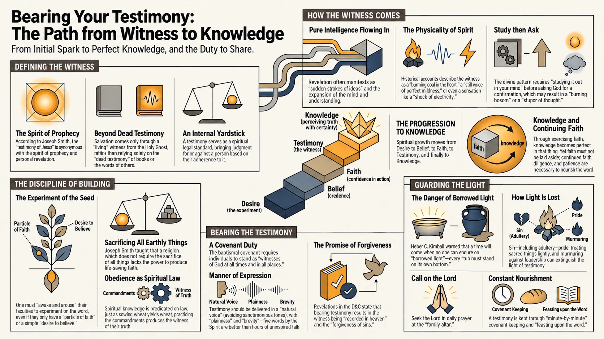

Bearing Your Testimony
Closing your talk
Each talk ends the same way. The speaker sets the teleprompter aside and bears testimony in their own words. The talk is the study; the closing shares how your faith has grown. It is short, a minute or two, and should be presented without visual aid.
This page is the short version. The full study guide, with every source, is its own page.
Building and Bearing Testimony

What a testimony is
A testimony is a witness the Holy Ghost gives to your own spirit that something is true. It comes by revelation, and it comes to one person at a time. Brigham Young said there is only one way to know: "by the inspiration of the Spirit of the Lord witnessing unto our spirit" (Journal of Discourses 12:114). Alma said the same thing about himself. He did not point to an argument, or to what his father had taught him. "Behold, I have fasted and prayed many days that I might know these things of myself. And now I do know of myself that they are true" (Alma 5:46).
Your parents' testimony is real, and it can carry you a long way, but it belongs to them. Heber C. Kimball warned the Saints that "the time will come when no man nor woman will be able to endure on borrowed light. Each will have to be guided by the light within himself." President John W. Woolley used to say, "The gospel is true, whether I believe it or not."
How the witness comes
Most people who are waiting for a testimony are waiting for something louder than what they are already receiving. The scriptures describe the witness in quiet terms. The Lord told Oliver Cowdery, "I will tell you in your mind and in your heart, by the Holy Ghost" (Doctrine and Covenants 8:2), and later reminded him of a night he had prayed alone: "Did I not speak peace to your mind concerning the matter? What greater witness can you have than from God?" (6:23). Alma describes a good seed that begins "to enlarge my soul" and "to enlighten my understanding" (Alma 32:28). Helaman describes "a still voice of perfect mildness, as if it had been a whisper," which "did pierce even to the very soul" (Helaman 5:30). Joseph Smith said the Holy Ghost gives "pure intelligence" and "sudden strokes of ideas."
So when the reading for your cohort makes sense in a way it did not before, when a verse stays with you for a day, or when you feel settled about something you had been unsettled about, pay attention. One old piece of counsel in the sources says: "The faint dawn of the Spirit is even now upon your mind. Now, reader, cherish this little dawn of light until the daylight of more truth shines more clearly." Those are the experiences you can describe in your closing.
Say exactly what is true for you
The sources treat belief, faith, testimony, and knowledge as steps on one ladder. Belief is being willing to take the word of people who know. Faith is acting on that belief. A testimony is the witness of the Spirit that comes "after the trial of your faith" (Ether 12:6). Knowledge is what you have once the witness is complete in a thing, and Alma is careful to say "in that thing" and then, two verses later, "neither must ye lay aside your faith" (Alma 32:34, 36). A witness does not replace faith. Most people stand on different rungs for different things, and that is normal.
This means you do not have to say "I know" about everything. Alma told his listeners that even if they could "no more than desire to believe," that desire could work in them (Alma 32:27). "I believe" is an honest place to stand, and a scriptural one. What the Spirit will not stand behind is a claim you do not hold. The Priesthood Discourses call that false witnessing: "She is falsifying the feelings of her heart... the Spirit of God will not possess the mind and will of a person who is a false witness" (1965, p. 325). Say what you know as knowledge, and what you believe as belief.
What a testimony is a witness of
When the early Saints bore testimony, they declared a short list of things: that God the Father lives, that Jesus is the Christ, that Joseph Smith was called of God as the prophet of this dispensation, that the Book of Mormon and the revelations are true, and that the Priesthood was restored. This year every cohort spends weeks with one name of Christ, so most closings will land on the second item in that list. That is enough. Nephi wrote, "We talk of Christ, we rejoice in Christ, we preach of Christ" (2 Nephi 25:26).
Why it has to be spoken
At baptism you agreed "to stand as witnesses of God at all times and in all things, and in all places that ye may be in" (Mosiah 18:9). The Lord also said something about people who keep quiet: "with some I am not well pleased, for they will not open their mouths, but hide the talent which I have given unto them because of the fear of man" (Doctrine and Covenants 60:2). The sources are just as clear about the reward. A testimony spoken aloud is "recorded in heaven for the angels to look upon" (62:3), and bearing it is one of the ways it grows.
Sometimes the witness arrives in the speaking. The Journal of Discourses tells of an elder who had never once said in public that Joseph Smith was a prophet. Cornered in a crowded meeting, he "opened his mouth and uttered the words: 'Joseph is a Prophet.' Instantly his tongue was loosened, the Holy Ghost poured out upon him, and from that hour he possessed a powerful, permanent witness" (Journal of Discourses 11:87).
How to bear it
- By the Spirit. The Lord promised that "it shall be given you in the very hour, yea, in the very moment, what ye shall say" (Doctrine and Covenants 100:6). Prepare, and then trust that promise.
- Plainly. "My soul delighteth in plainness" (2 Nephi 31:3). Use ordinary words and your ordinary voice. Joseph Smith told his brother Don Carlos to "always speak in his natural tone of voice and not keep in a loud or unnatural strain."
- Briefly. Brigham Young and Heber C. Kimball taught that five words spoken by the Holy Ghost do more good than an hour of talking without it. J. Marion Hammon's father put it this way: "Learn to stand up, speak up, and shut up."
- Honestly. Say what is true for you, in your own words. "Tears have nothing to do with the truth" (Priesthood Discourses, 1961, p. 154).
- Humbly. Give the glory to God. Tell your own experience without making yourself the hero of it.
- In the name of Jesus Christ. Every talk in this program ends that way, and so does the testimony inside it.
A closing that follows the sources has a simple shape. Say what you know, one thing or two, in the first person. If it fits, say briefly how you came to know it. Say what it has done in you. Then close.
What to leave out
- Arguments. "He that hath the spirit of contention is not of me" (3 Nephi 11:29).
- A second sermon. The talk did the teaching, so the closing does not need to teach again.
- Things you do not know. Do not fill the time with speculation.
- Private confession. Brigham Young: "If you have sinned against your God, or against yourselves, confess to God, and keep the matter to yourselves."
- Forced feeling, or a borrowed church voice.
- Sacred experiences that are not yours to share, or that belong to your family.

Preparing the closing
- Decide which of the pillars you know and which you believe, and say each the way it is true for you.
- If you are not sure you have a witness yet, do the work the sources describe: study it out, pray plainly for what you want, fast, make right anything between you and someone else, and keep at it past the first day.
- Remember the times the Spirit has spoken to you, however small. Those are your evidence.
- Write your testimony down for yourself. The Priesthood Discourses say putting it "in a phraseology that's good for us" trains the mind and helps you live it (1963, p. 136). Then set the paper aside. You may bring a note card to the stand, but not a script.
- Expect the witness to be there while you speak.
These helps are drawn from a longer study guide, with every source cited, on its own page.
Four ways in
"Bear your testimony" is not much of an instruction by itself. Here are four ways in. Pick one or two, and prepare the closing the way you prepare the talk: think it through before you stand up. Preparation does not make a testimony less genuine.
A story of your own
Somewhere in your cohort's passage, a person meets Christ. Tell about a time you were experiencing something like what the people in the story were experiencing. It does not need to be dramatic, and it does not need to resolve neatly. A talk on the storm at sea can close with your own storm and what you learned about where peace comes from.
A generational connection
Your testimony does not have to start with you. It can start with your parents or your grandparents: what was given to them, what it cost them, and what has come down to you because of it. Nobody else in the room can give this closing, because nobody else has your family.
I used to think, and now I know
Look back at the weeks your cohort spent with this name of Christ. My understanding of Christ used to be one thing; after this study, something shifted. Name what you thought before, and name what you know now. That change is a testimony.
Sentence starters
Sometimes the story is too private to tell. You can still share what it gave you. If you need a first sentence, take one of these and finish it honestly:
- The light I have been given in this is...
- What I keep coming back to is...
- What these weeks changed for me is...
- I know for myself that...
Witnesses before you
You are not the first person asked to say what you know. It has been done in a few words before:
For I know that my redeemer liveth, and that he shall stand at the latter day upon the earth.
Job 19:25
Do ye not suppose that I know of these things myself? Behold, I testify unto you that I do know that these things whereof I have spoken are true.
Alma 5:45
And they overcame him by the blood of the Lamb, and by the word of their testimony.
Revelation 12:11
And now, after the many testimonies which have been given of him, this is the testimony, last of all, which we give of him: That he lives!
Doctrine and Covenants 76:22